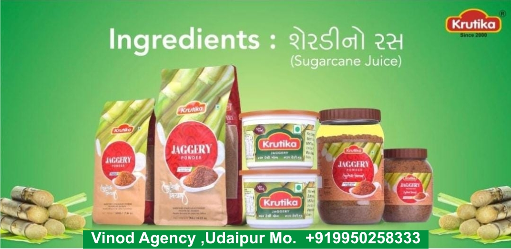
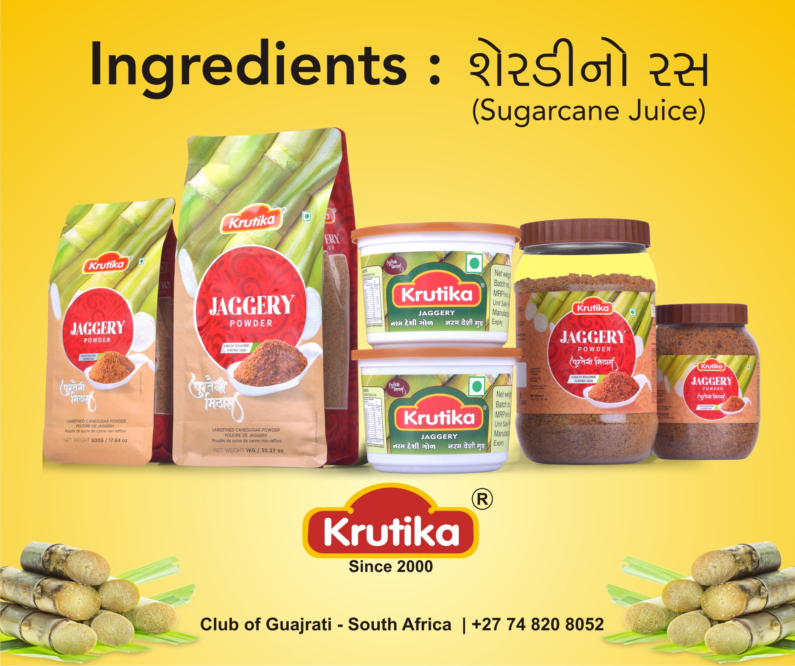
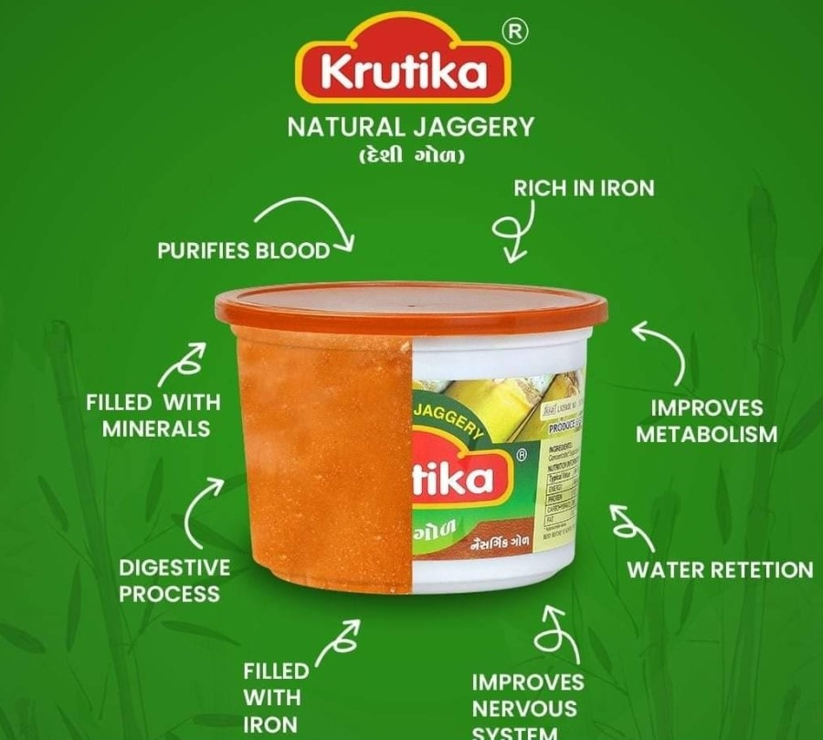
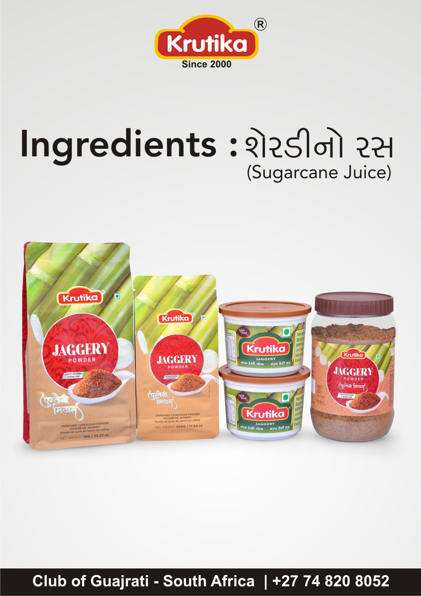
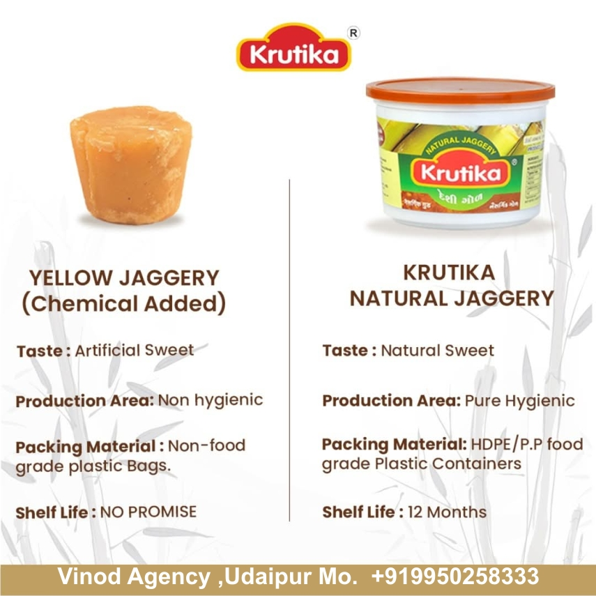
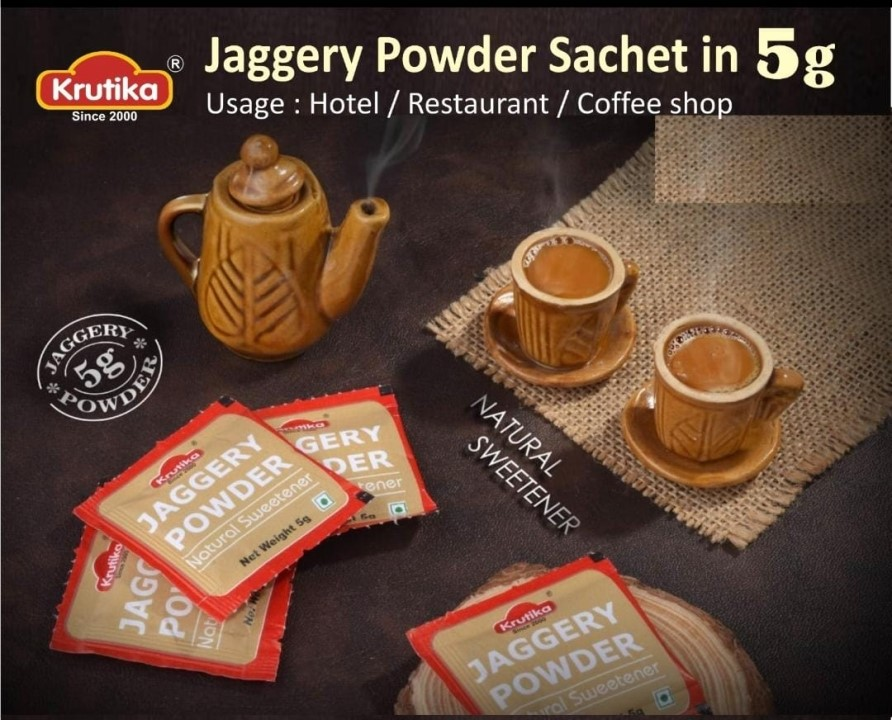
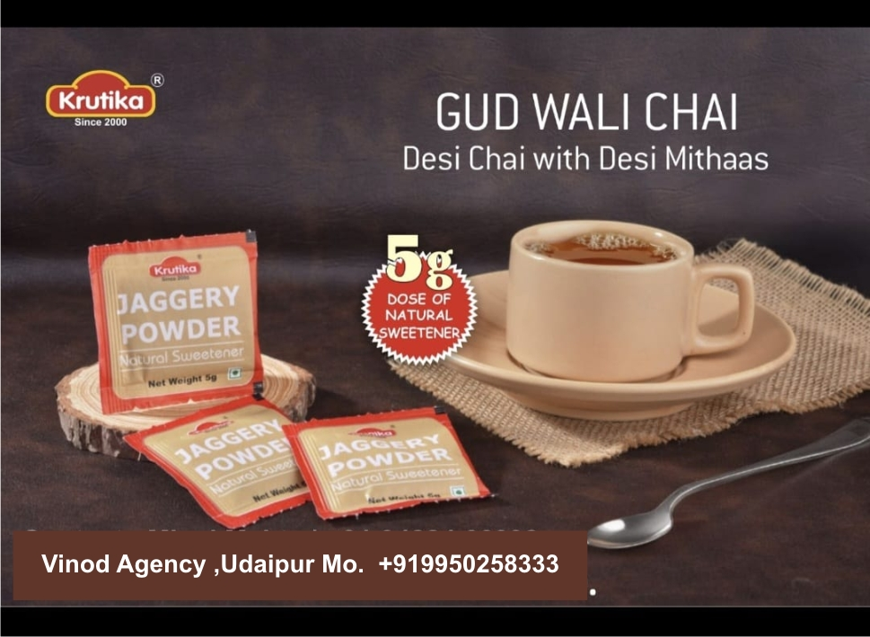
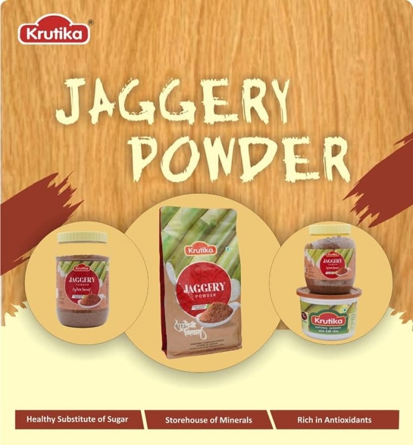

Preparing something pure
0%
Preparing something pure
Premium natural jaggery in every form — crafted for purity, packed with goodness.

Traditional solid jaggery block — perfect for cooking, tea & traditional sweets.

Certified organic jaggery block from pesticide-free sugarcane farms.

Finely ground jaggery powder — ideal for baking, beverages & desserts.

Coarse granules for a rustic texture — great for health drinks & cooking.

Convenient bite-sized cubes — perfect for tea, coffee & on-the-go snacking.

Smooth, pourable liquid jaggery — perfect for drizzling, marinades & sauces.

Jaggery infused with real ginger — a warming, immunity-boosting treat.

Aromatic cardamom-infused jaggery — a festive favorite for sweets & chai.